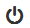
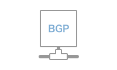
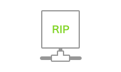
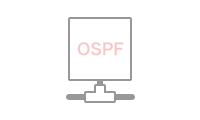

×
新建拓扑
拓扑名称
传统拓扑
SDN拓扑
确定
取消
仪表面板
快速向导
拓扑管理
日志管理
系统管理
用户管理
统计分析
个人中心
中国电信云计算实验室
网络模拟平台
Welcome,
Administrator

快速创建拓扑向导
从列表中选择一种拓扑模板，或选择从空白模板重新绘制拓扑
空白拓扑
经典三层网络
带路由器的网络
带防火墙的网络
经典SDN网络

BGP

RIP v1 & v2

OSPF 2-4
创建